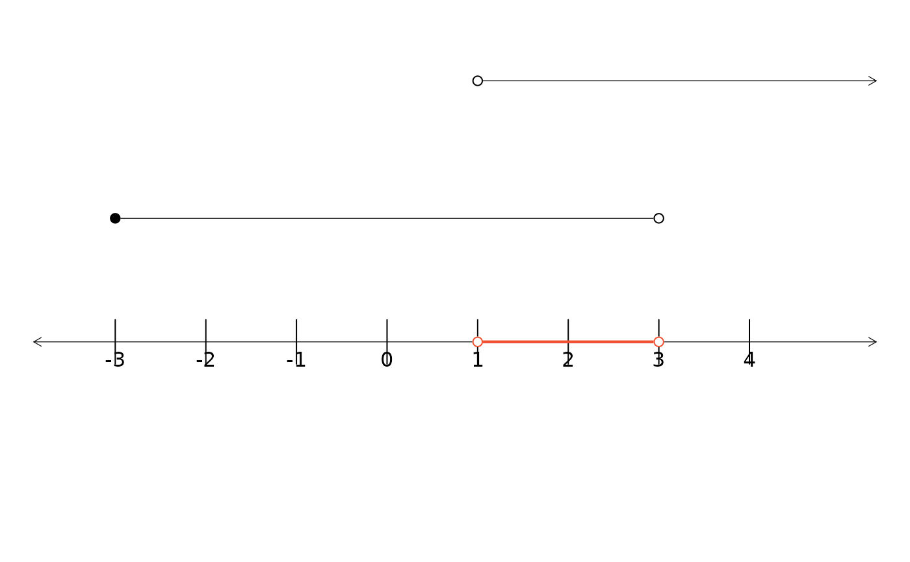

Creae a plot showing two line segments. The union or intersection of those
line segments can also be generated by utilizing the type argument.
dlsegments( x1 = c(3, 7), x2 = c(5, 9), l = c("o", "o"), r = c("c", "c"), type = c("n", "u", "i"), COL = 2, lwd = 2.224, ylim = c(-0.35, 2), mar = rep(0, 4), hideOrig = FALSE )
Arguments
| x1 | The endpoints of the first interval. Values larger (smaller) than 999 (-999) will be interpreted as (negative) infinity. |
|---|---|
| x2 | The endpoints of the second interval. Values larger (smaller) than 999 (-999) will be interpreted as (negative) infinity. |
| l | A vector of length 2, where the values correspond to the left end
point of each interval. A value of |
| r | A vector of length 2, where the values correspond to the right end
point of each interval. A value of |
| type | By default, no intersection or union of the two lines will be
shown (value of |
| COL | If the union or intersection is to be shown (see the |
| lwd | If the union or intersection is to be shown (see the |
| ylim | A vector of length 2 specifying the vertical plotting limits,
which may be useful for fine-tuning plots. The default is |
| mar | A vector of length 4 that represent the plotting margins. |
| hideOrig | An optional argument that to specify that the two line
segments should be shown ( |
See also
lsegments, CCP,
ArrowLines
Author
David Diez
Examples
